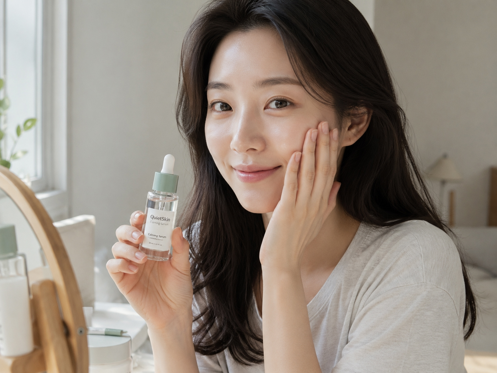
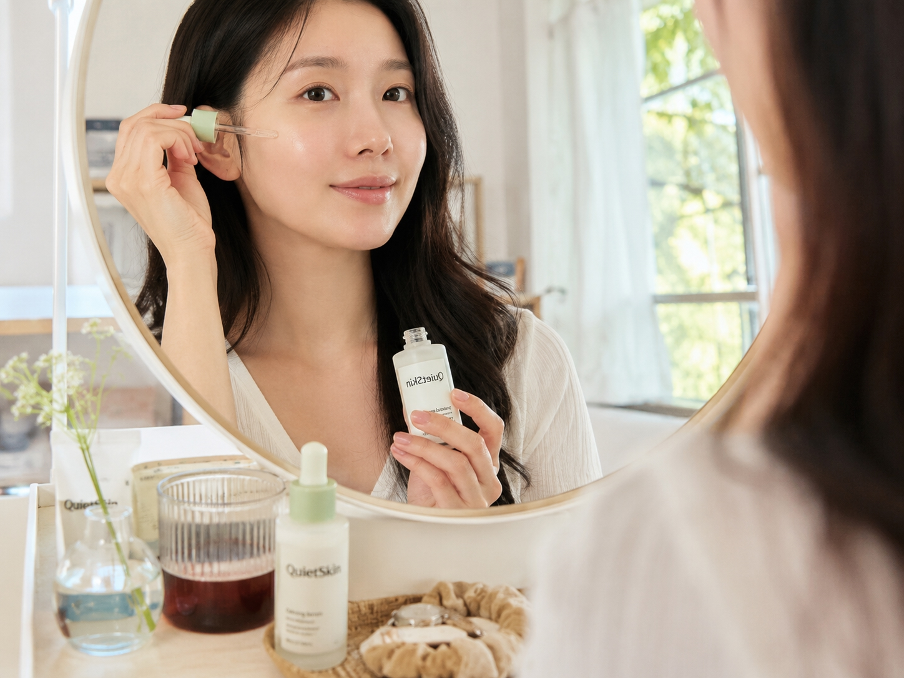
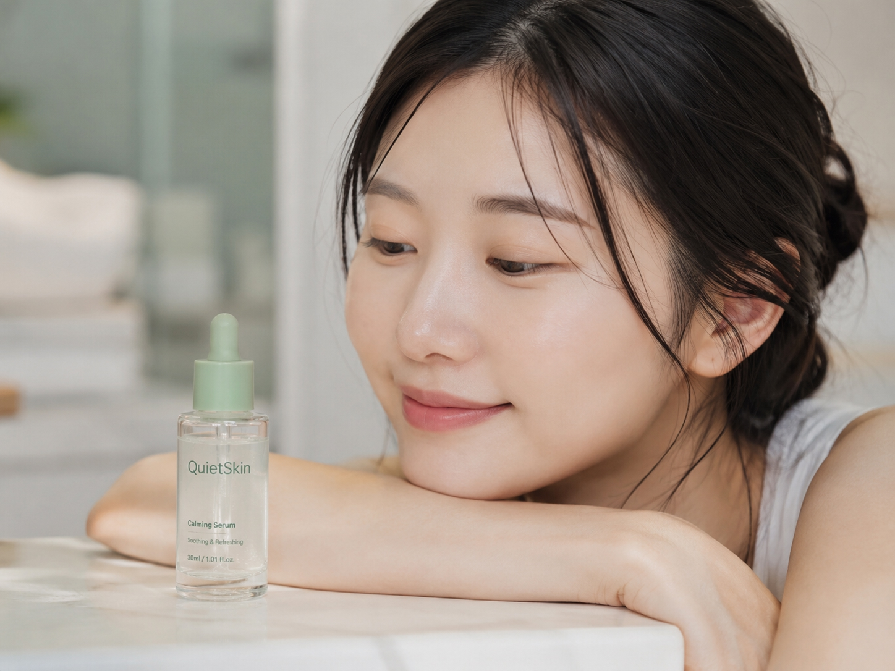
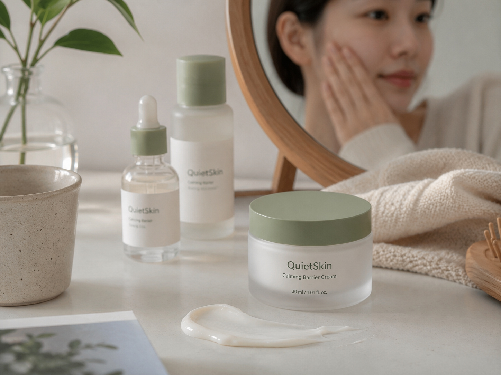
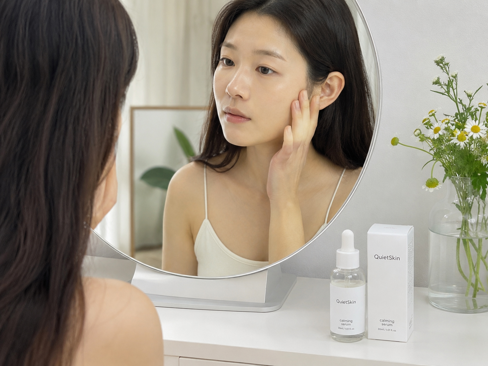
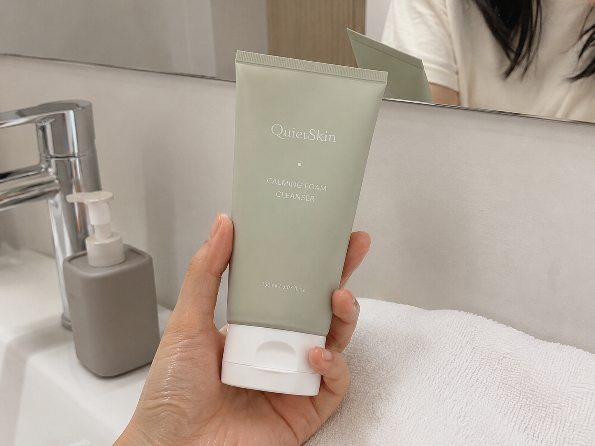
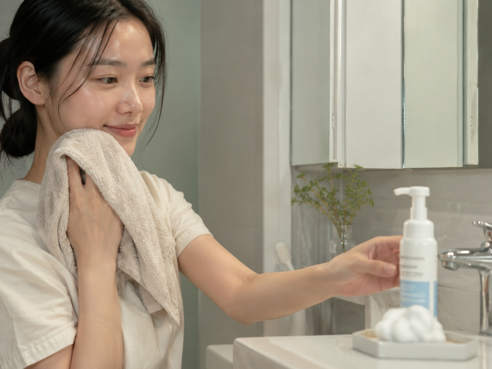
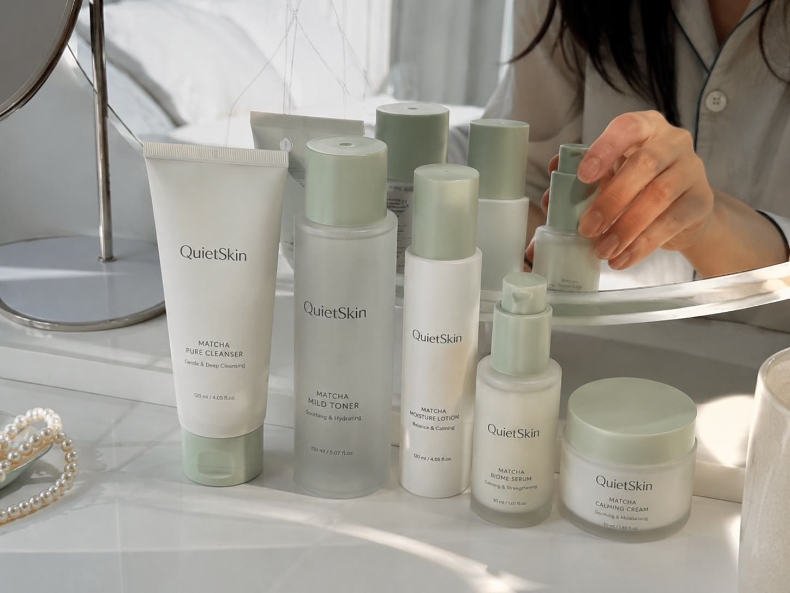

Photo Reviews
민감한 피부가 직접 남긴
민감한 피부가 직접 남긴
QuietSkin 사용 기록
실제 사용자들이 남긴 피부 컨디션 변화와 루틴 후기를 모았습니다. 제품별 사용감과 짧은 리뷰를 한눈에 확인할 수 있도록 구성했습니다.
4.9 / 5
1,230 Reviews
진정감, 산뜻한 흡수감, 메이크업 전 사용감에서 높은 만족도를 받았습니다.
Best Photo Review

5.0
흡수가 빠르고 피부가 편안해졌어요.
세안 후 바로 바르면 따갑지 않고 수분감이 빠르게 들어오는 느낌이에요. 메이크업 전에 사용해도 밀리지 않아서 매일 쓰고 있습니다.
김** 고객님 · 카밍 진정 앰플 30ml
5.0
아침 루틴에 쓰기 좋아요.
보습 제품을 많이 바르면 답답한 편인데 이 루틴은 산뜻하게 마무리돼요. 오후까지 피부가 건조하게 갈라지는 느낌이 줄었습니다.
박** 고객님 · 카밍 토너 + 카밍 진정 앰플 30ml
5.0
민감한 피부에도 부담이 적었어요.
향이 강하지 않고 흡수가 빨라서 좋았습니다. 피부가 뒤집어진 날에는 앰플을 한 번 더 레이어링하면 훨씬 편안해져요.
이** 고객님 · 카밍 진정 앰플 30ml
4.8
장벽 케어 루틴으로 만족해요.
크림까지 바르면 피부 위에 보호막이 생기는 느낌인데 답답하지 않습니다. 환절기에 특히 손이 자주 가는 제품이에요.
최** 고객님 · 카밍 모이스처라이징 크림
5.0
메이크업 전에 사용해도 밀리지 않아요.
수분감은 있는데 번들거림이 적어서 선크림과 파운데이션이 잘 올라갑니다. 아침 루틴으로 정착했어요.
정** 고객님 · 카밍 진정 앰플 30ml
5.0
피부 컨디션이 들쑥날쑥할 때 안정적이에요.
제품을 바꾸면 트러블이 잘 생기는 편인데 큰 자극 없이 사용할 수 있었습니다. 특히 세안 후 당김이 줄어든 점이 마음에 들어요.
윤** 고객님 · 카밍 폼 클렌저
5.0
세안 후 당김이 덜해졌어요.
약산성 클렌저라 그런지 아침 세안 후에도 얼굴이 편안합니다. 카밍 진정 앰플 30ml까지 바르면 수분감이 오래가요.
한** 고객님 · 카밍 폼 클렌저
4.8
세트로 쓰니 루틴이 쉬워졌어요.
어떤 순서로 써야 할지 고민이 적고 제품들이 서로 잘 맞습니다. 민감한 날에도 무리 없이 사용할 수 있었어요.
오** 고객님 · 진정 루틴 세트
Review Guide
리뷰를 남길 때 이런 내용을 함께 적어주세요
- 피부 타입과 가장 고민되는 피부 상태
- 사용한 제품과 루틴 단계
- 흡수감, 마무리감, 메이크업 전 사용감
- 사용 전후로 체감한 변화